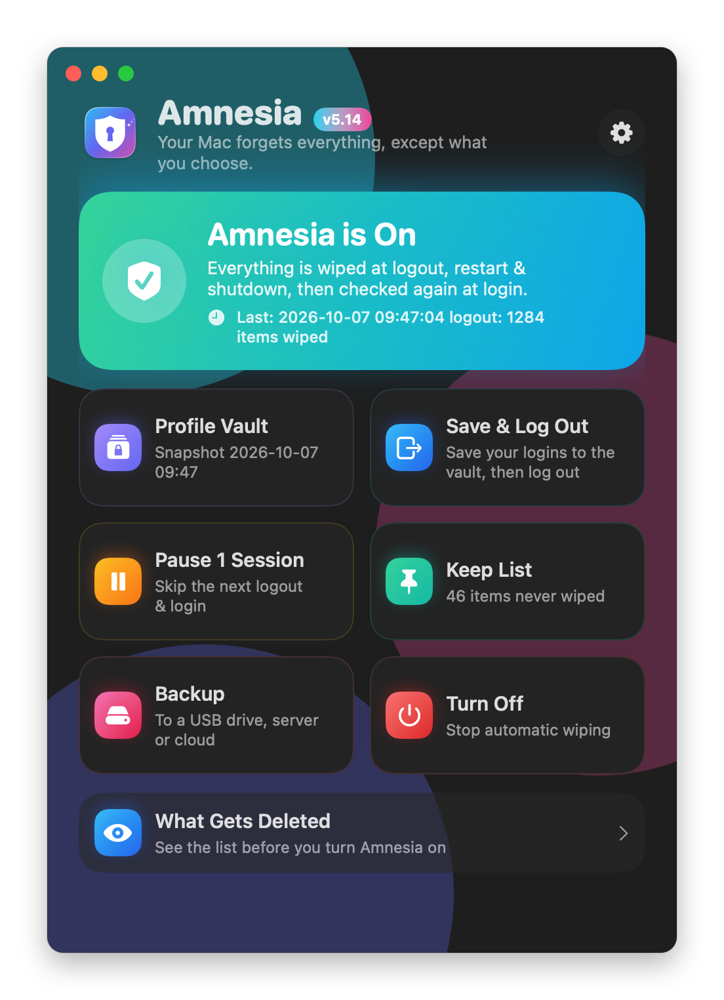

USB drive or SSDFlashdisk atau SSD
Plug it in, pick it once. Scheduled backups run daily or weekly on their own.Colok, pilih sekali. Backup terjadwal jalan sendiri tiap hari atau tiap minggu.
/Volumes/…Every logout, restart and shutdown wipes your Mac clean. Your Keep folder, Keep List and locked Profile Vault stay.Setiap logout, restart dan shutdown, Mac kamu dibersihkan. Folder Keep, Keep List dan Profile Vault yang terkunci tetap ada.
brew install navi-crwn/tap/amnesia
Downloads, browser history, cookies, chats and app data. Anything that isn't on your Keep List is gone before the Mac logs out, then checked again at login.Downloads, riwayat browser, cookie, chat dan data app. Semua yang tidak ada di Keep List hilang sebelum Mac logout, lalu dicek lagi saat login.
Right before the wipe, logins for Chrome, Claude, WhatsApp and your coding tools go into the Profile Vault. Saving needs no password. Opening it does.Tepat sebelum dibersihkan, login Chrome, Claude, WhatsApp dan alat coding kamu masuk ke Profile Vault. Menyimpan tidak butuh password. Membukanya butuh.
Get the vault password wrong 3 times, or type your panic word, and the vault destroys itself.Salah password vault 3 kali, atau ketik kata panik, dan vault menghancurkan dirinya sendiri.
We call this Memory Recall. A clean Mac doesn't mean starting over, as long as you made a snapshot or a backup earlier.Kami menyebutnya Memory Recall. Mac yang bersih tidak berarti mulai dari nol, asalkan kamu sudah membuat snapshot atau backup sebelumnya.
Log in, type your vault password, and Chrome, Claude and WhatsApp open signed in.Login, ketik password vault, lalu Chrome, Claude dan WhatsApp terbuka dalam keadaan login.
Pick files from a backup and they go back where they came from. Nothing is overwritten.Pilih file dari backup dan semuanya kembali ke tempat asalnya. Tidak ada yang ditimpa.
Lost the vault on this Mac? The copy inside your last backup takes its place.Vault di Mac ini hilang? Salinan di backup terakhir menggantikannya.
Your vault and Keychain keys travel together, so apps on the new Mac open logged in.Vault dan kunci Keychain ikut pindah, jadi app di Mac baru langsung terbuka dalam keadaan login.
Plug it in, pick it once. Scheduled backups run daily or weekly on their own.Colok, pilih sekali. Backup terjadwal jalan sendiri tiap hari atau tiap minggu.
/Volumes/…Type the server password once. Amnesia sets up an SSH key for you and uses it from then on.Ketik password server sekali. Amnesia memasang kunci SSH dan memakainya seterusnya.
ssh + rsync · user@hostGoogle Drive, Dropbox, OneDrive, Box or pCloud. You log in through your browser.Google Drive, Dropbox, OneDrive, Box atau pCloud. Login lewat browser kamu.
rclone · Drive for DesktopEvery backup is one .7z file, AES-256, locked before it leaves your Mac. No servers of ours, no accounts, no tracking.Setiap backup adalah 1 file .7z, AES-256, dikunci sebelum keluar dari Mac kamu. Tanpa server kami, tanpa akun, tanpa pelacakan.



Amnesia really deletes. Wiped files don't go to the Trash. These are the moments with no way back:Amnesia benar-benar menghapus. File yang dihapus tidak masuk Trash. Ini saat-saat tanpa jalan kembali:
Amnesia stays off until you turn it on yourself. Read the terms first.Amnesia tetap mati sampai kamu sendiri yang menyalakan. Baca syaratnya dulu.
Get the .dmg from Releases and drag Amnesia to Applications, or use the Homebrew command below.Ambil .dmg dari Releases lalu seret Amnesia ke Applications, atau pakai perintah Homebrew di bawah.
It isn't signed by Apple yet. The first time, go to System Settings → Privacy & Security → Open Anyway.Belum ditandatangani Apple. Pertama kali, buka System Settings → Privacy & Security → Open Anyway.
The welcome tour finds your apps and asks what to keep. Turn Amnesia on only when you're ready.Tur perkenalan menemukan app kamu dan menanyakan apa yang disimpan. Nyalakan Amnesia kalau sudah siap.
brew install navi-crwn/tap/amnesia